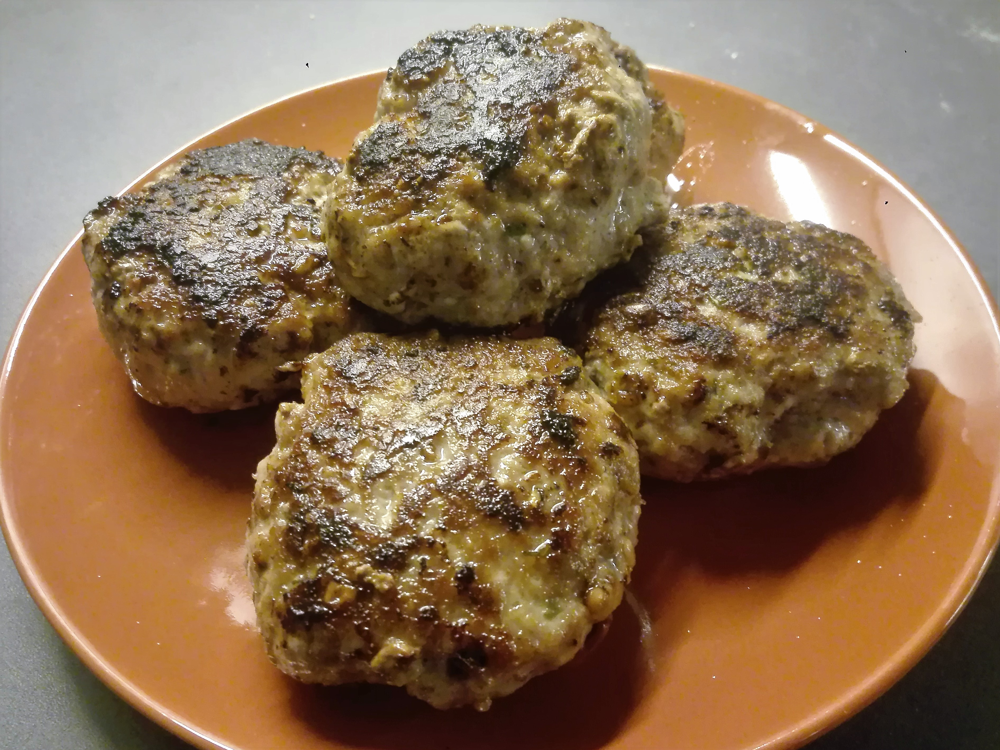

Isicia Omentata (hamburgers)

Today we will present a recipe of isicia omentata. Omentum is the Latin word for caul fat, an ingredient widely
used in historical and traditional Italian cuisine. It is essential for a good outcome of the recipe: Apicius, a
roman chef, suggests using a lean cut of meat for the meatballs, and the omentum is the only fat used here. It
will melt during the cooking, giving a pleasant moisture to the meatballs that otherwise would result too dry.
Ingredients
- 500g minced meat
- 1 French roll, soaked in white wine
- 1/2 tsp freshly ground pepper
- 50ml Liquamen
- some pine nuts and green peppercorns
- a little Caroenum (optional)
Steps
-
Mix minced meat with the soaked French roll. Grind up the pine nuts and peppercorns, mix into the meat.
-
Form small balls with your hands. Put them in a little packet of foil and add a splash of Caroenum. Close
the packet.
-
Bake for 10-15 mins.